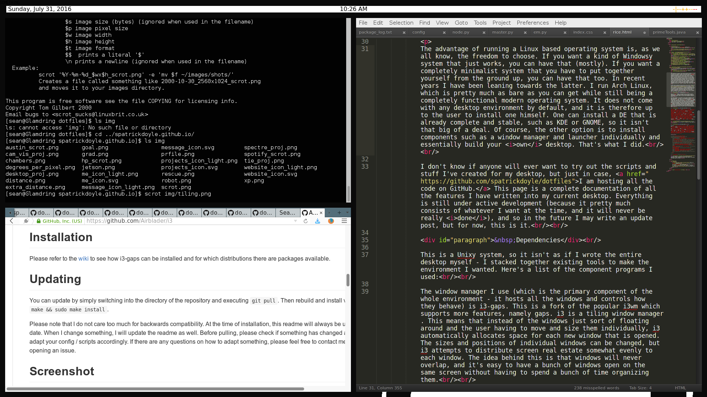

The advantage of running a Linux based operating system is, as we all know, the freedom to choose. If you want a kind of Windowsy system that just works, you can have that (mostly). If you want a completely minimalist system that you have to put together yourself from the ground up, you can have that too. In recent years I have been leaning towards the latter. I run Arch Linux, which is pretty much as bare as you can get while still being a completely functional modern operating system. It does not come with any desktop environment by default, and it is therefore up to the user to install one himself. One can install a DE that is already complete and stable, such as KDE or GNOME, so it isn't that big of a deal. Of course, the other option is to install components such as a window manager and launcher individually and essentially build your own desktop. That's what I did.
I don't know if anyone will ever want to try out the scripts and stuff I've created for my desktop, but just in case, I am hosting all the code on GitHub. This page is a complete documentation of all the features I have written into my current desktop. Everything is still under active development (because it pretty much consists of whatever I want at the time, and it will never be really done), and so in the future I may write an update post, but for now, this is it.
This is a Unixy system, so it isn't as if I wrote the entire desktop myself - I stacked together existing tools to make the environment I wanted. Here's a list of the component programs I used:
The window manager I use (which is the primary component of the whole environment - it hosts all the windows and controls how they behave) is i3-gaps. This is a fork of the popular i3wm which supports more features, namely gaps. i3 is a tiling window manager. This means that instead of the windows just sort of floating around and the user having to move and size them individually, i3 automatically allocates space for each new window that is opened. The sizes and positions of individual windows can be changed, but i3 attempts to distribute screen real estate somewhat evenly to each window. The idea behind this is that windows will never overlap, and it's easy to have a bunch of windows open on the same screen without having to spend a bunch of time organizing them.

The i3-gaps fork introduces gaps between windows, which I like because with gaps you can still see the desktop wallpaper.
Now, since the windows tile, you can't just grab and drag to move them around like you could if they were floating. So to swap the positions of windows on the screen or resize them, keyboard shortcuts are necessary. I'll get to that a little later, but I mention it now because it is an integral part of the tiling window manager. I personally like it because it decreases dependency on the mouse and makes it really easy to move between desktops.
Speaking of which, i3 supports multiple desktops. This may be an unfamiliar concept for Windows users - the idea that multiple desktops can be running at the same time with different windows open on them. But it's really convenient. I can have a terminal open on desktop 1, a browser open on desktop 2, and a text editor open on desktop 3, they will never overlap, and switching between them is as easy as pressing the right key combination.
Okay enough ranting about i3 and how cool it is, moving on.
Nitrogen is a program which allows you to have a desktop wallpaper. That's pretty much it. It works with all kind of different window managers and it comes with a nifty graphical tool.
xcompmgr (which is pretty much short for X Composite Window-effects Manager) is a program which allows windows to have transparency. If a program calls for transparency in a window, xcompmgr composites the window with whatever is behind it. I use it because it is light and I've never had a problem with it.
lemonbar is a status bar tool that is really cool. Basically it creates a bar at the top of the screen (or if you want to put it somewhere else, you can do that too) and the bar displays whatever text you pipe to it through STDIN. So it is pretty much useless by itself, but since it is up to the user to write the back-end, it can be made to look really slick. Again, more will be said below about the ways I use lemonbar.
(I actually use a fork of lemonbar, lemonbar-xft, which supports more fonts, but is essentially the same in every other respect. Speaking of fonts, the fonts I use in the lemonbar are part of a package called ttf-ms-fonts.)
The terminal I use is called Terminator, and it has cool features like splitting one window into multiple and opening multiple tabs. I mention is here because I autostart it from my i3 config file, but it is not in any way an integral part of my desktop.
The launcher I use is called rofi. A desktop needs some way to launch programs other than a terminal, and rather than a graphical dock or menu, I use rofi. It is a menu that can be launched with a hotkey, and you can run any command from within it. It then remembers which programs you use most and presents them to you when you open it successively. Simple and slick.
i3lock is a program that does what it says on the tin - it locks the screen so nothing else can happen until you enter your use password. You can configure it to display an image or a color or whatever, which is cool. I have a custom script that launches it, which I detail below.
scrot - used to take screenshots. Again, not an integral part of the desktop environment, but it is integrated into the aforementioned lock script, so I mention it as a dependency.
In addition to the normal mode in which I use my computer, I have created a 'tablet mode', which changed things to be more suited for use with a touchscreen, as my computer, the HP Spectre, can fold back its display and sort of morph into a tablet. The programs used in this tablet mode are easystroke, for detecting swipes, onboard, a nice virtual keyboard, stalonetray, which creates an icon at the bottom of the screen that can be used to launch and hide the keyboard, grox, a command line tool for rotating the screen, and xautomation, which is used to emulate keypresses.
Finally, there are a couple programs which aren't true dependencies, since everything else will work without them, but they are used, so I will mention them. These are wifi-menu, which is a pretty standard means of connecting to the Internet in Arch, pm-utils, which I use to put the computer to sleep, and Sox, which I use to play sound effects.
Vestibulum ante ipsum primis in faucibus orci luctus et ultrices posuere cubilia Curae; Praesent orci massa, elementum ut nulla eget, mattis volutpat erat. Vestibulum dictum, metus nec ullamcorper lacinia, metus sapien finibus purus, elementum suscipit diam erat eu mauris. Vestibulum ornare elementum diam. Vestibulum laoreet vehicula nisi at suscipit. Proin quis dignissim nisi. Suspendisse posuere, ante eu efficitur bibendum, tellus leo vestibulum velit, id ultricies velit sem in ex. Nulla finibus aliquam metus, imperdiet faucibus eros tempor quis. Sed fringilla vel enim nec imperdiet. Nunc fermentum tellus vel mauris tempus, ac porta enim mollis. Etiam varius hendrerit dictum. Quisque maximus elementum massa, sodales gravida justo ullamcorper vitae. Cras vitae condimentum velit. Pellentesque habitant morbi tristique senectus et netus et malesuada fames ac turpis egestas.
In id ex nec tortor dignissim tristique sed et tellus. Maecenas sit amet sem id massa pharetra viverra. Praesent ultricies enim felis, quis dictum tortor accumsan ut. Aliquam venenatis orci quis felis ultricies rutrum. Pellentesque felis nulla, accumsan non rutrum ut, elementum non nisl. Quisque interdum egestas interdum. Mauris sagittis quam dui, vitae ornare velit facilisis et. Nulla et justo non erat faucibus auctor. Mauris neque ipsum, euismod sit amet finibus et, fermentum eu magna. Maecenas quis finibus metus, a egestas ipsum. Sed id venenatis risus. Integer porttitor luctus dapibus. Suspendisse sed eros sodales, lobortis lacus congue, molestie felis.